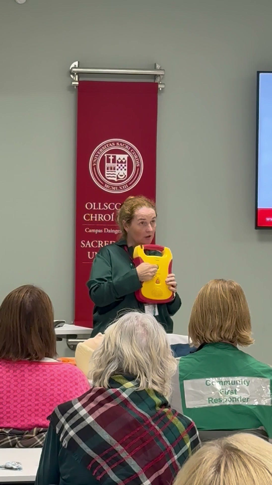
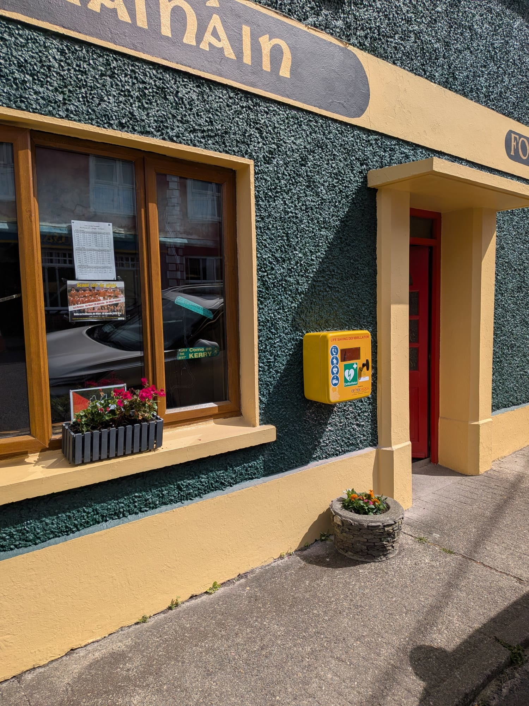
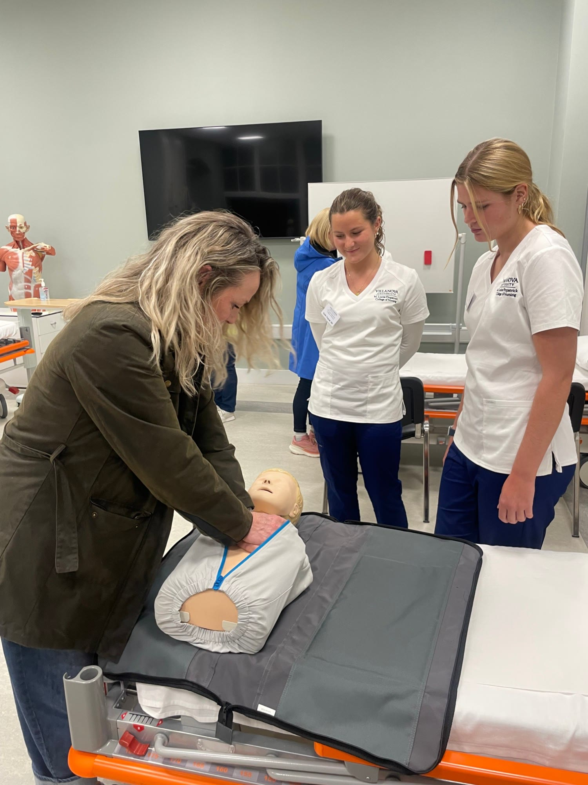

When we are called
When a 999 or 112 call is made in or around Dingle for specific life-threatening emergencies, the ambulance control centre automatically dispatches our on-call volunteers at the same time as the ambulance.
What we do
Dingle Heart Safe is a highly trained Community First Responder (CFR) scheme, directly linked to the National Ambulance Service. We provide local emergency support where geographical distance might delay professional medical help.

Core operations
When a 999 or 112 call is made in or around Dingle for specific life-threatening emergencies, the ambulance control centre automatically dispatches our on-call volunteers at the same time as the ambulance.
The AED network
We manage and maintain a network of public-access AEDs in and around Dingle.
See where every one is on the map, or let your phone pick the closest and open directions in Google Maps.

Community training
Beyond emergency response, we run community training sessions so that members of the public can act with confidence.

The chain of survival
Because our volunteers live within the community, we can frequently arrive on the scene within minutes, often before the ambulance can navigate rural roads. We do not replace paramedics: our essential role is to sustain life and prevent deterioration during those critical early moments, securing the initial links in the chain of survival.
Someone spots the emergency and makes the call, and ambulance control dispatches the ambulance and our volunteers together.
Our responders provide immediate CPR to sustain life until the ambulance arrives.
We deploy an AED to restart the heart as early as possible.
Paramedics take over when they arrive, and we hand over with vital updates on the patient.